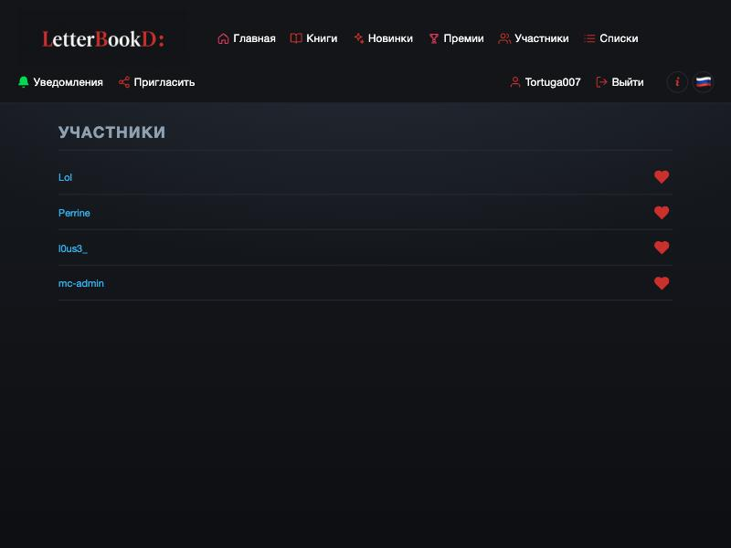

Участники
Зачем это нужно: Следить за людьми из твоего клуба: видеть их чтения, отзывы и списки, быть в курсе их новых любимых книг. Ты видишь только участников, с которыми у тебя есть хотя бы один общий клуб.

Как это устроено
Простой список: одна строка на участника, ник кликабельный (открывает профиль). Справа сердце позволяет отметить его как «подписка». Именно это наполняет блок «Участники, за которыми я слежу» на твоей главной. Участники без общих клубов здесь не появляются (правило видимости letterbookd).
Цепочки действий
Каждая строка — это триггер в интерфейсе, модалка или форма, которые он открывает, и результат.
| Триггер | Модалка / Поля | Эффект |
|---|---|---|
| Ник участника | — | Открывает профиль участника: его списки, чтения и отзывы, отфильтрованные по клубам, которые вы разделяете. |
| Значок сердца справа от участника | — | Подписывает или отписывает тебя от участника. Отслеживаемый участник выводится в начало твоей главной («Участники, за которыми я слежу»), а его новые отзывы приходят тебе в «Уведомления» в первую очередь. |